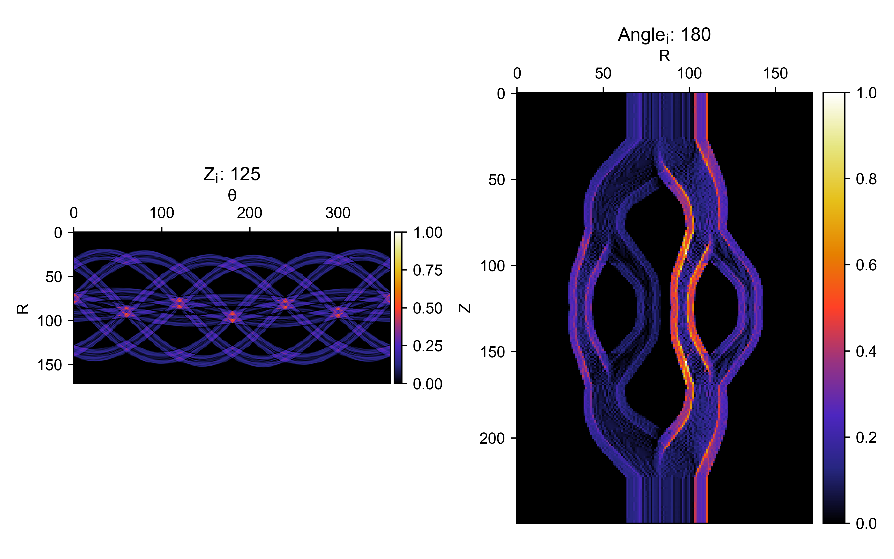
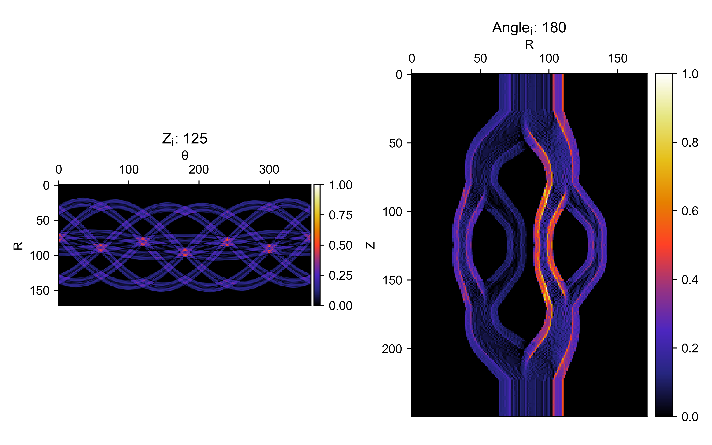

3D optimization
Walkthrough
Import VAMToolbox modules and numpy.
if __name__ == "__main__":
import VAMToolbox as vam
import numpy as np
Create a VAMToolbox.geometry.TargetGeometry from a .stl file by specifying the stlfilename and resolution i.e. the number of slices in the z-axis and show the target with the VAMToolbox.geometry.Volume.show() method.
target_geo = vam.geometry.TargetGeometry(stlfilename="examples\\trifurcatedvasculature.stl",resolution=200)
target_geo.show()

Create the VAMToolbox.geometry.ProjectionGeometry object. First, the angles array is created by using numpy.linspace to create 1D array of evenly spaced angles at which to perform projection.
num_angles = 360
angles = np.linspace(0, 360 - 360 / num_angles, num_angles)
proj_geo = vam.geometry.ProjectionGeometry(angles,ray_type='parallel',CUDA=True)
Create an VAMToolbox.optimize.Options object and run optimization. The VAMToolbox.optimize.Options object holds the parameters used by the VAMToolbox.optimize.optimize() function.
optimizer_params = vam.optimize.Options(method='OSMO',n_iter=20,d_h=0.85,d_l=0.6,filter='hamming',verbose='plot')
opt_sino, opt_recon, error = vam.optimize.optimize(target_geo, proj_geo,optimizer_params)
 

Tip
Hover the mouse pointer over either slice and scroll to slice through the 3D voxel array at different z and x indices.
Alternatively, the vedo plotting package may be used to display the optimized reconstruction array (opt_recon.array). The RayCastPlotter application works well for customizable 3D display of the reconstruction array.

Example file
if __name__ == "__main__":
import VAMToolbox as vam
import numpy as np
target_geo = vam.geometry.TargetGeometry(stlfilename="examples\\trifurcatedvasculature.stl",resolution=200)
target_geo.show()
num_angles = 360
angles = np.linspace(0, 360 - 360 / num_angles, num_angles)
proj_geo = vam.geometry.ProjectionGeometry(angles,ray_type='parallel',CUDA=True)
optimizer_params = vam.optimize.Options(method='OSMO',n_iter=20,d_h=0.85,d_l=0.6,filter='hamming',verbose='plot')
opt_sino, opt_recon, error = vam.optimize.optimize(target_geo, proj_geo,optimizer_params)
opt_recon.show()
opt_sino.show()
import vedo
import vedo.applications
vol = vedo.Volume(opt_recon.array,mode=0)
vedo.applications.RayCastPlotter(vol,bg='black').show(viewup="x")